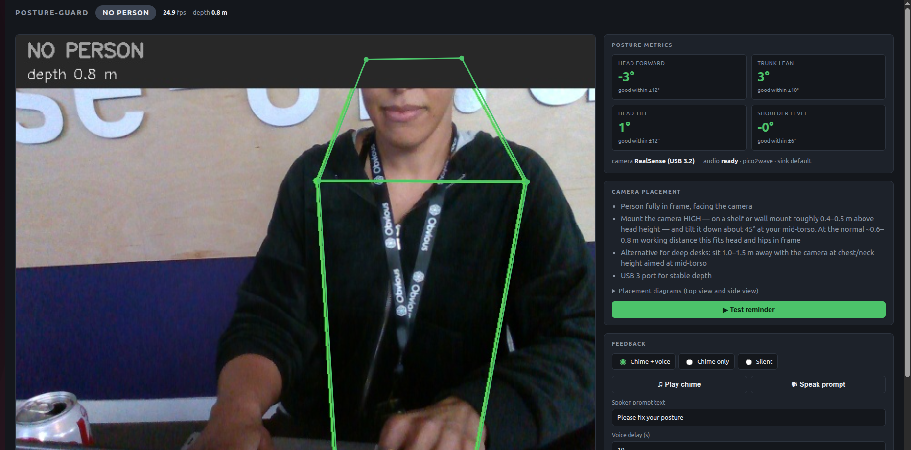
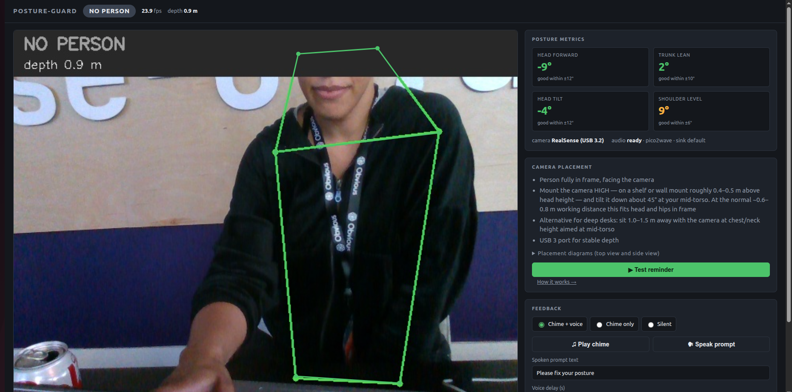

What it does
Sit at your desk; the camera watches, scores four head/shoulder angles, and only nudges you when bad posture sustains — chime first, spoken prompt after, silence the moment you sit up. Every feature below is merged code, not a mockup.
State-colored wireframe + root-cause pills
The tracking skeleton changes color with posture state, and a diagnostic pill names the cause — e.g. “TOP EDGE CLIPPED — TILT CAMERA UP” — instead of a vague failure.
PR #15Unified 0–100 posture needle
A single always-on needle summarizes all metrics at a glance, with a “Reminder in Ns” countdown bar so a nudge never surprises you.
PR #13Threshold bars + grace-period ring
Each metric card shows its own target band as a bullet bar, and a grace ring counts down the sustain window before a reminder fires.
PR #16Chime + spoken prompt, configurable modes
Synchronized reminders: chime once when bad posture holds, then a pico2wave voice prompt — with chime+voice / chime-only / silent modes and on-demand test buttons.
PRs #9, #10Positive reinforcement chime
Sustained good posture earns its own gentle chime on an interval you choose — feedback for sitting well, not just for slouching.
PR #11Partial-tracking resilience
Hips out of frame? Scoring keeps working from head and shoulders. Only losing the ears + shoulders gates scoring — the dashboard then says so honestly.
PR #7Personal baseline that catches whole-torso slouch
A slowly adapting EMA baseline per metric catches the whole-torso recline that fixed angle thresholds miss, alongside tighter thresholds and sustain hysteresis.
PR #14Mini-HUD picture-in-picture
Collapse the video into a 120 px mini-HUD with a status ring and inclinometer — the dashboard consolidates to what matters while you work.
PR #17How-it-works page, privacy code-verified
A built-in docs page walks the full pipeline, the pose model, and a privacy section verified against the code: all processing stays local.
PR #12How it works
One pipeline, end to end, on your own machine:
- RealSense capture Depth + RGB from a D400-series camera; depth doubles as a distance gate — you are only scored inside 0.6–2.5 m.
- MediaPipe Pose 33 2D landmarks with per-landmark visibility, running fully on CPU, in-process.
- Scoring Four angles (head forward, trunk lean, head tilt, shoulder level) against thresholds, with hysteresis, sustain windows, and a personal EMA baseline.
- State machine Bad posture must hold ~2 s before a chime; a spoken prompt follows ~10 s later and repeats at most every 30 s while you stay slouched.
- PulseAudio chime + pico2wave TTS A serialized playback queue renders each prompt on the fly (espeak-ng as fallback) on your chosen audio sink.
The dashboard
Real screenshots from the live app — wireframe overlay, per-metric target bands, placement guidance, and feedback controls.


Quickstart
Linux, Python 3.10+, and (optionally, to start) a RealSense — without a camera the pipeline falls back to a synthetic frame source so the dashboard is fully verifiable first.
- Clone and set up (system packages + venv + hardware preflight report):
git clone https://github.com/arii/posture-guard.git cd posture-guard ./setup.sh - Run the app — it serves the dashboard at
http://127.0.0.1:8000:make run(equivalently:
python -m posture_guard.dashboard.serve) - Tune everything from
config.yaml— thresholds (scoring.*_deg), sustain windows (state.*_s), the positive chime (feedback.positive_chime.*), the depth band (scoring.depth_min_m/scoring.depth_max_m), and your audio sink (audio.sink).
Privacy
Nothing is recorded, nothing leaves the machine. Frames are analyzed in memory and dropped — no video, landmarks, or metrics are ever written to disk. The pose model and speech render locally on CPU; the dashboard binds to 127.0.0.1. No cloud, no third-party services — unplug the network and everything keeps working. Verified in the code before it was written on the How-it-works page.